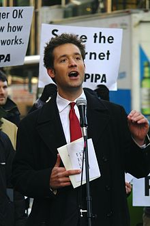

Ohanian was born to Chris Ohanian, an Armenian-American whose ancestors were
Armenian Genocide survivors, and a German-born mother, Anke. He went to Howard
High School in Ellicott City, Maryland. After graduating from the University of
Virginia in 2005 with degrees in commerce and history, Ohanian started
reddit.com, with co-founder Steve Huffman. Reddit initially received funding
from Y Combinator and was later acquired by Condé Nast in 2006. Ohanian
continued to work closely with Reddit as a member of its Board of Directors.
In 2007, Ohanian launched Breadpig, an "uncorporation" that produces geeky
merchandise and gives the proceeds to charity. He continues to run Breadpig
today as its Founder and Chief Swine Defender
After leaving Reddit in 2009, Ohanian spent 3 months working in microfinance as
a Kiva fellow in Yerevan, ArmeniaIn 2009, Ohanian spoke at TED about a whale
named Mister Splashy Pants. Ohanian helped launch travel search website Hipmunk
in 2010, and now acts as an advisor In June 2010, Ohanian announced the launch
of his company Das Kapital Capital, which focuses on startup investing, advising
and consulting.
Ohanian was named the "Ambassador to the East" for early stage venture firm Y
Combinator. In this position, he meets with East Coast applicants, mentors New
York YC founders, and is a general representative for the company.
In late 2010 and early 2011, Ohanian spoke out against Congress's Stop Online
Piracy Act and the Senate's Protect IP Act. He helped lead the Internet-enabled
grassroots campaign that eventually overturned the two bills. Ohanian spoke to
members of Congress, helped launch the national anti-SOPA/PIPA protests that
took place on January 18, 2012, and spoke at the rally in New York that was
organized by NY Tech Meetup.
In October 2012, Ohanian teamed up with Reddit General Manager Erik Martin and
embarked on the Internet 2012 Bus Tour from Denver, CO to Danville, KY to
campaign for the open Internet during the Presidential and Vice Presidential
debates. One of the campaign stops spurred the idea for a possible "National
Geek Day." in Washington DC.
In response to his work advocating for the Open Internet, The Daily Dot named
Ohanian number one in their top ten most influential activists of 2012, and
Forbes dubbed him "Mayor of the Internet."
On December 10, 2012, Ohanian teamed up with Lester Chambers of The Chambers
Brothers to launch a Kickstarter project, with the intent to make a new album
titled "Lester's Time Has Come." According to Fast Company, Ohanian aimed "to
prove that there are new, sustainable funding opportunities for artists now
thanks to platforms like Kickstarter."
Two years later, Ohanian raised $12,244 for the non-profit Black Girls Code on
Tilt.com. In May 2014, Ohanian used Tilt.com again to launch "Save Net
Neutrality: Billboard in FCC's Backyard," a crowdfunding campaign to protest the
FCC's plans to eliminate the idea of net neutrality.